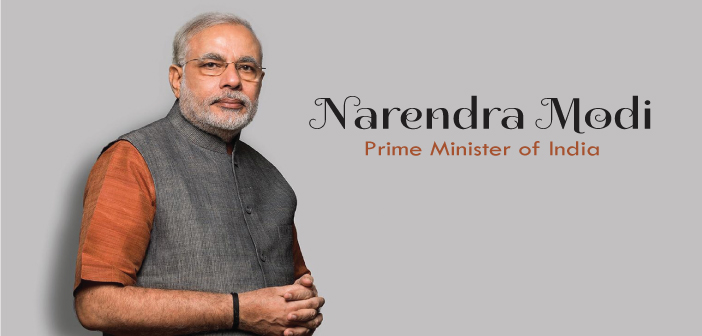
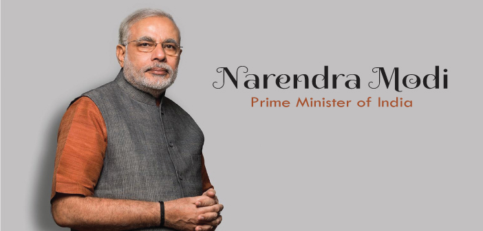

Narendra Damodardas Modi
The Prime Minister of India
Prime Minister Narendra Modi has taken India's global standing to newer height with the world applauding his transformational leadership.
 
Biography
- 1950 - Born in Gujarat, India
- 1965 - Offered his services voluntarily to the soldiers at the railway stations during the Indo-Pak war.
- 1971 - Stopped working for his uncle and became a full-time campaigner for the RSS.
- 1978 - Received a Bachelor of Arts degree in political science from School of Open Learning at University of Delhi, graduating with a third class.
- 1983 - Received a Master of Arts degree in political science from Gujarat University, as an external distance learning student.
- 1987 - The RSS deputed Narendra Modi to politics by recommending his candidature in the BJP.
- 1988 - Became the General Secretary of the BJP's Gujarat unit.
- 1995 - Was appointed as the Secretary of the BJP's national unit.
- 1998 - Was promoted as General Secretary and held the position till October 2001.
- 2001 - Was appointed as the Chief Minister of the state of Gujarat.
- 2009 - The FDI magazine honoured him as the Asian Winner of the FDI Personality of the Year Award.
- 2014 - Was sworn in as the Prime Minister of India.
- 2019 - Was again sworn in as the Prime Minister of India.